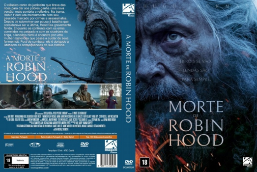

![link to A Morte de Robin Hood [Autorado] on Rotten Tomatoes](../img/tomatoes.png)
![link to A Morte de Robin Hood [Autorado] on TheMovieDb](../img/themoviedb.png)

Outro Título:The Death of Robin Hood
País:United States, 123 minutos
Idiomas falados:Inglês, Português
Gênero(s):Aventura, Drama, Ação
Diretor(s):Michael Sarnoski
Escritor(es):Michael Sarnoski
Codec:MPEG-2 (DVD)
Número: 5966


Certificado:18
Sinopse:
O clássico conto do justiceiro que tirava dos ricos para dar aos pobres ganha uma nova versão, mais sombria e reflexiva. Na trama, Robin Hood luta mentalmente com seu passado marcado por crimes e assassinatos. Depois de sobreviver por pouco à batalha que considerava ser a última, Hood fica gravemente ferido. Enquanto se confronta com os erros cometidos no passado e com as cicatrizes da briga, o lendário herói é encontra por uma mulher misteriosa que passa a cuidar de seus ferimentos. Fora de combate, ele é obrigado a lidar com as consequências de sua história.
Elenco:
Tipo de mídia: DVD5,
Legendas: Português, Sem Legendas
Alugado: Não
Tela: Anamorphic Widescreen